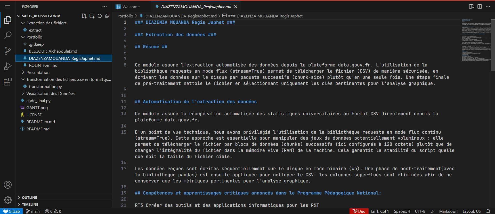
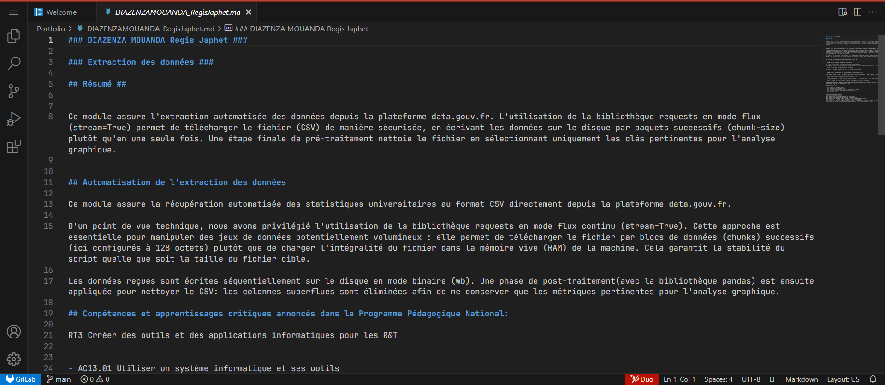
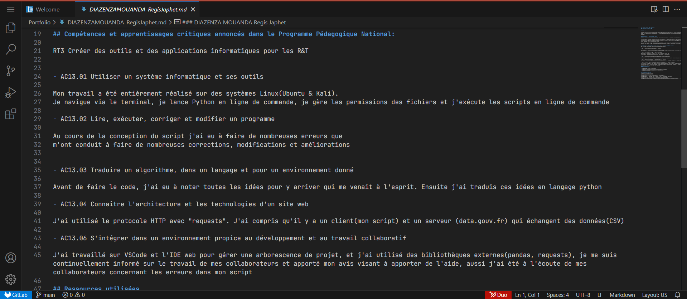
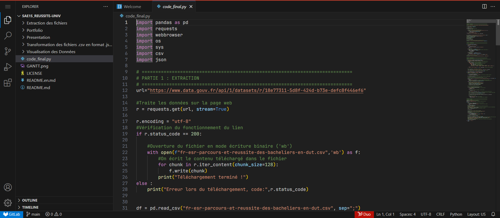
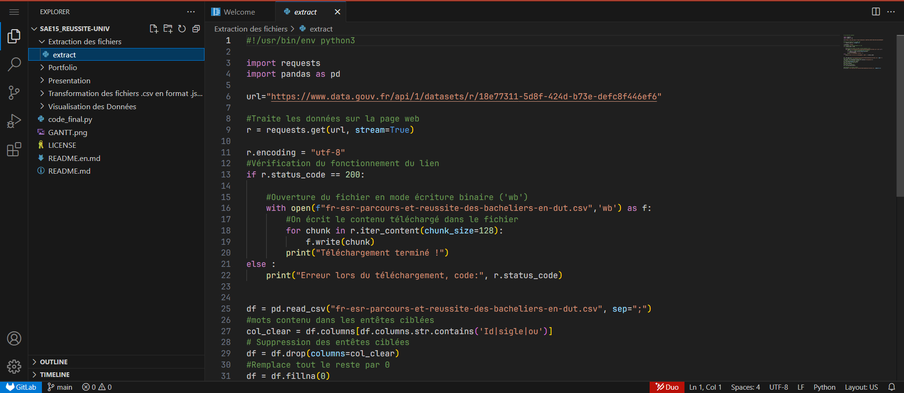
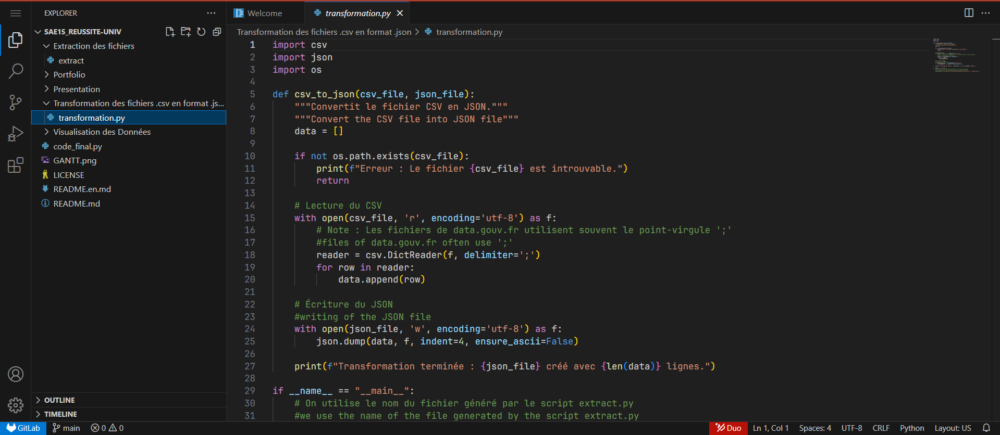
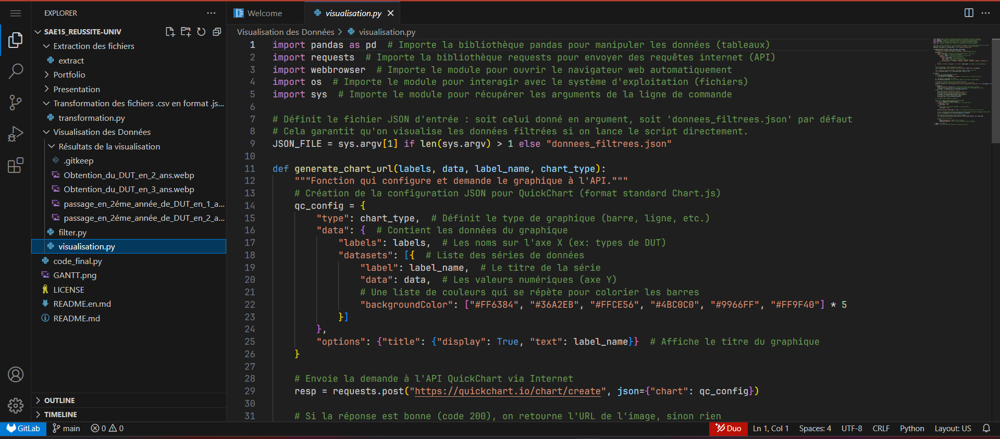
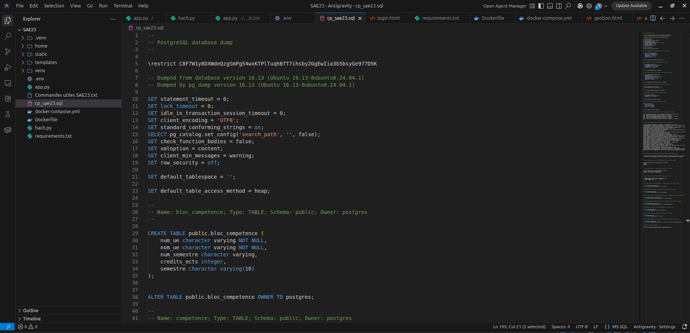
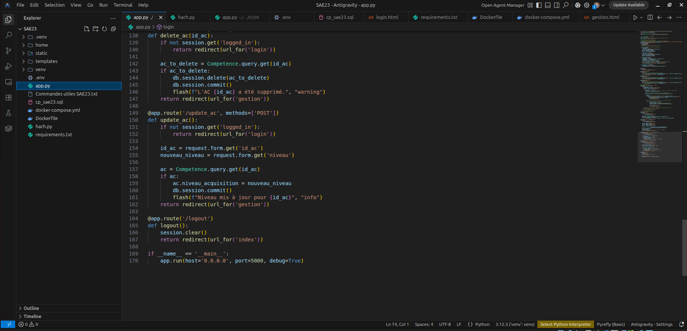
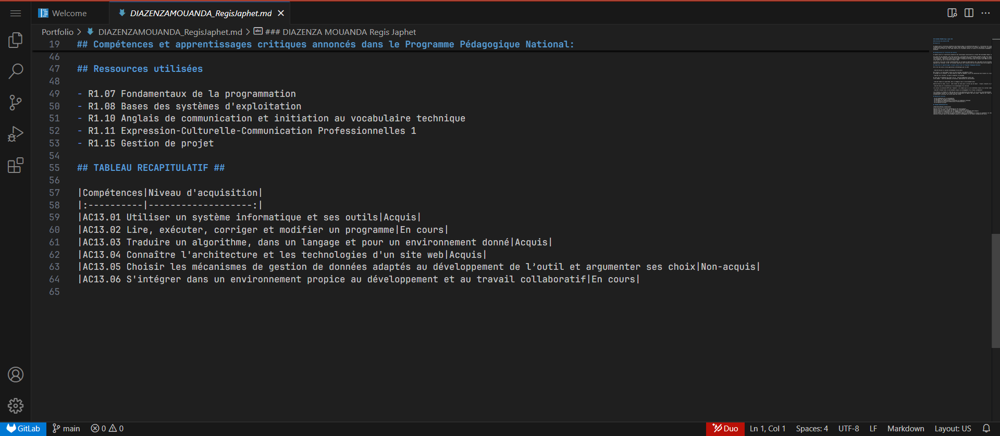

Programmer
Créer, développer et optimiser des applications logicielles, des outils d'automatisation réseau et des infrastructures de sites Web. Ce pôle certifie une excellente maîtrise de l'algorithmique en Python, des bases de données relationnelles SQL et des technologies Web modernes.
Apprentissages Critiques (AC)
Cliquez sur un apprentissage critique pour faire défiler la page et voir ses preuves et détails techniques correspondants.
Utiliser un système informatique et maîtriser le terminal de commandes UNIX
Lire, exécuter, déboguer et corriger un script algorithmique
Traduire un algorithme en code et écrire des scripts d'automatisation réseau
Connaître l'architecture et concevoir des pages Web (HTML/CSS)
Choisir et implémenter des mécanismes de bases de données relationnelles SQL
S'intégrer dans un environnement de développement collaboratif (Git/GitHub)
Dossier de Preuves Détaillé
Utilisation du terminal et des commandes UNIX
Contexte d'apprentissage
Contrôle Technique Pratique (CTP) et cours de prise en main des systèmes informatiques R101/R108.
Actions et réalisations
Maîtrise de la manipulation d'arborescences systèmes UNIX complexes. Création de dossiers, copies de fichiers en groupe et attribution de droits d'accès via le terminal Linux (`mkdir`, `cp`, `pwd`, `chmod`). Exploration de l'interface GUI des OS.
Outils & Technologies


Lecture, débogage et modification d'algorithmes
Contexte d'apprentissage
Travaux pratiques algorithmiques d'initiation et de structuration en langage Python.
Actions et réalisations
Analyse de codes d'algorithmes classiques, débogage pas-à-pas de variables d'exécution et écriture de scripts optimisés (calculs de maximums, conversion Celsius-Fahrenheit, tests de mots palindromes et sommes de multiplications).
Outils & Technologies

Traduction d'algorithmes & Automatisation de scripts réseaux
Contexte d'apprentissage
Programmation avancée d'outils réseaux en Python (analyse automatique de données réseaux).
Actions et réalisations
Conception et écriture d'algorithmes d'automatisation d'administration de réseaux. Écriture de scripts d'analyse de fichiers logs réseaux pour en extraire des adresses MAC par expressions régulières (Regex), et de scripts de requêtes API web via protocole HTTP (météo et requêtes de tests complexes).
Outils & Technologies




Architecture et intégrations de pages Web
Contexte d'apprentissage
Cours de création web et d'architecture front-end de sites de communication (R109).
Actions et réalisations
Conception et codage structuré de maquettes web. Manipulation de balises HTML5 d'organisation de texte et d'habillage de formulaires de saisie, création de barres de navigation réactives (menus horizontaux/verticaux) et mise en page responsive avec des feuilles de style CSS personnalisées.
Outils & Technologies
Bases de données relationnelles SQL
Contexte d'apprentissage
Modélisation et interrogation de bases de données relationnelles dans le module SGBD R2.08.
Actions et réalisations
Conception logique de bases de données. Interrogation de tables PostgreSQL avec des requêtes SQL complexes : maîtrise des jointures de tables, agrégations statistiques, filtres et création de vues logiques d'administration.
Outils & Technologies


Développement et versionnage collaboratif
Contexte d'apprentissage
Projets de programmation à l'IUT et gestion de versions logicielle en groupe.
Actions et réalisations
Utilisation active de Git (GitHub/GitLab) pour l'intégration de codes de groupes. Résolution de conflits et collaboration logicielle (Pair Programming) sur des notebooks d'ingénierie réseaux partagés et de projets de synthèse.
Outils & Technologies
